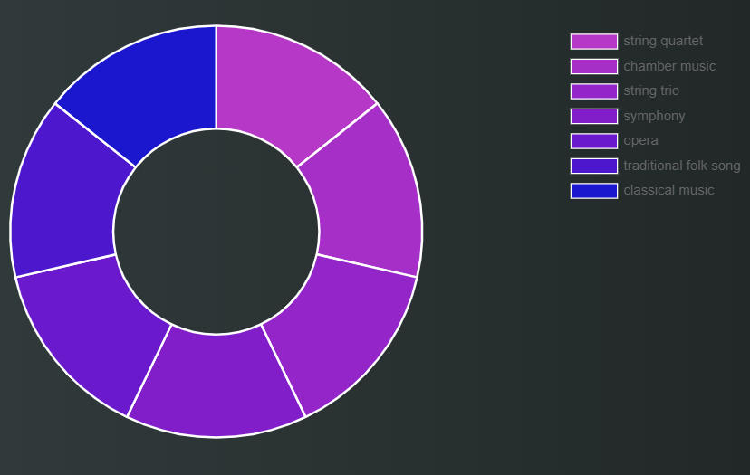
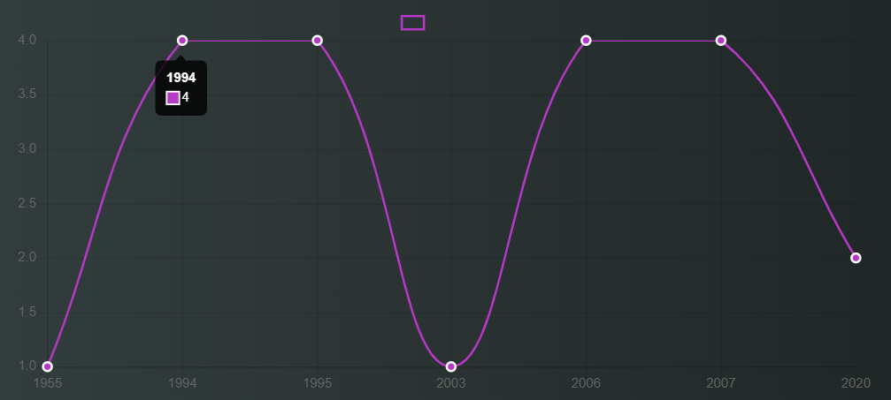

André Rieu & His Johann Strauss Orchestra performing Ode to Joy in Maastricht
An overview on Beethoven

Ludwig van Beethoven is historically collocated in the Classical Period, but his work is the maximum example of the expressive freedom of early Romaticism. He came from a humble family with a strong musical background. His father recognised his talent right away and tried to promote him as enfant prodige (the "next Mozart"). At a very early age he started receiving piano and violin lessons until he became a talented composer, pianist and conductor. During his life he suffered a series of illnesses, including the onset of deafness at 28 which worsened throughout his life until he became completely deaf. Despite this debilitating health condition, he composed 722 works, of which 9 symphonies, 35 piano sonatas and 16 string quartets.
He was born in December 1770 in Bonn, Germany. He moved to Vienna at a young age. He moved back home for a brief period to attend to his sick mother, but mostly lived and worked in Austria throughout his life. He died in Vienna on March 26th 1827 and his last words are believed to be "I will be able to hear in heaven!"

Beethoven was a versatile composer, his work comprises string quartets, piano sonatas, chamber music, string trio, symphonies, opera compositions, folk songs. His most famous compositions are 'Für Elise' and 'Ode to Joy', which was chosen as European anthem in 1972 (click on the video above to listen to it).
Beethoven was a versatile composer, his work comprises string quartets, piano sonatas, chamber music, string trio, symphonies, opera compositions, folk songs. His most famous compositions are 'Für Elise' and 'Ode to Joy', which was chosen as European anthem in 1972 (click on the video above to listen to it).

Beethoven's art and music was deeply influenced by other great composers. First and foremost, Franz Joseph Haydn who was his tutor.
Important figures who also inspired him are the two other classical giants, Johann Sebastian Bach and Amadeus Mozart (explore our website to learn more about them).
Beethoven as well left a mark on those who came after him. His myth is so big that it has shaped our musical heritage and is still present in our culture today in many different ways,
including through the production of books, movies and TV series centered around his character and his life.
If you want to find out more about Beethoven's life and works, check out our Melody story .
If you want to find out more about Beethoven's life and works, check out our Melody story .